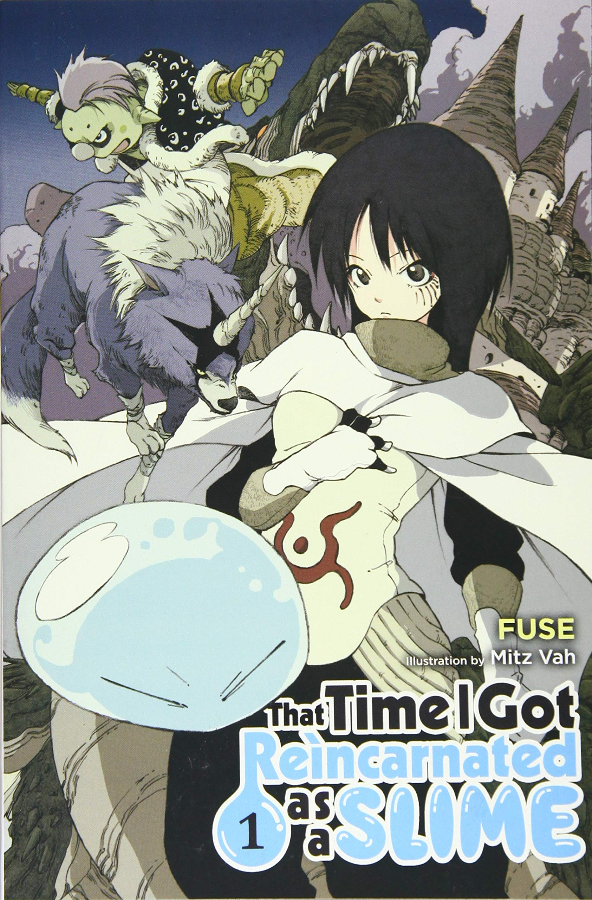
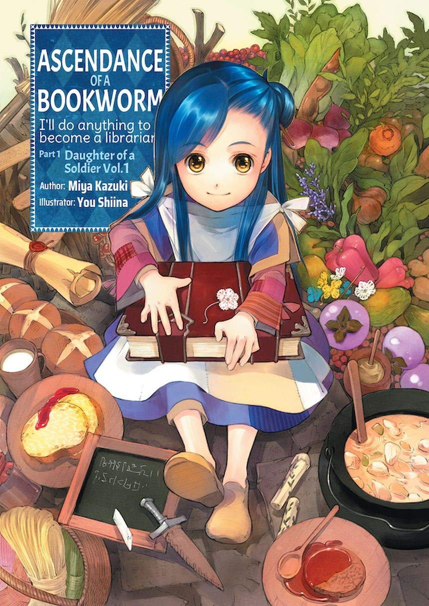
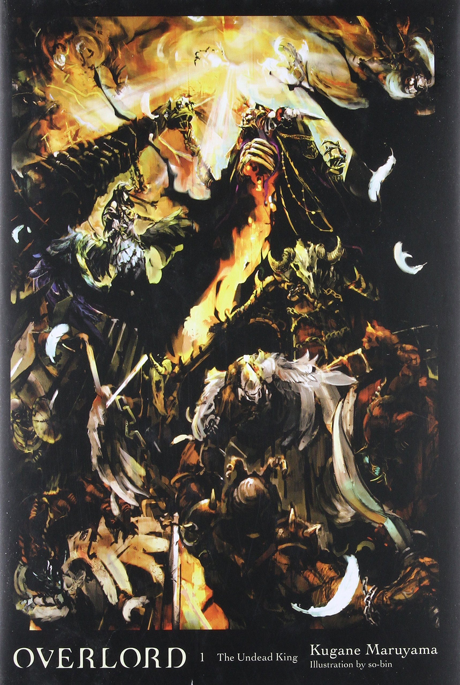

That Time I got Reincarnated as a Slime

This story turns a 37-year-old man into a genderless slime. With an on-the-nose title and a slime as a main lead, the series sounds weak, but trust me when I say that they managed to make it work. He is born with all of these different abilities and he gets more of them as he absorbs monsters. With that power, he decides to help a goblin village being attacked by wolves. As the story goes by, he manages to turn a tiny village of scrawny goblins into town with architecture, a council, and agricultural system. As the town develops, more characters of different races moves in to help contribute to such a huge project. The slime is everything you could ask for in a main lead. He is funny, powerful, and sympathetic, but isn’t naive enough to be pushed around. He also continues to learn how to fight, as well as how to run an entire civilization. Learn More
The Rising of the Shield Hero

A rather unique twist to this story. A optimistic man is transported into a magical world with a shield as a weapon (yes, a shield. After a full day, he is charged for a crime he didn’t commit and the world turns against him. No allies, no money, and not being able to use a weapon because the shield won’t let him, the man becomes bitter and grows to hate everything about the world. Despite that, he still needs to survive. he relies on making and selling medicine in order to make an income. Stuck in a society where everyone scorns at him and not having the fire power to kill the weakest of enemies, he’ll do anything to get anywhere in life. Making threats and owning slaves are a few questionable choices he makes. I understand that some of his actions are raise-worthy, but you can understand that with no other option in a society that hates him, he really doesn’t have any other option. Learn More
Bungou Stray Dogs

A series that not too many people are talking about. In this world, there are special individuals with special powers. Most of the characters are named after famous writers, like Omasu Danzi and Nathanial Hawthorne. Their powers are based off of a piece of literature from the writers that they were named after. This is more of a mystery story as we are following a detective agency and a mafia, both sides having likable characters. Learn More
The Ascendance of a Bookworm

I’ve only just started reading this series. A high school girl is killed and is reincarnated as a little girl who is sick and very frail. Reading was her favorite hobby in her past-life, but she now lives in a time where paper isn’t so common, a time where getting an education is a lot harder than it is today. Her goal is to figure out the writing system of this worked and figure out how to get her hands on some paper. What I like about this story is that it feels more natural compared to other stories. She takes oil from a fruit and uses it to make a shampoo. She uses knowledge from her last life in order to make the life of poverty a little more tolerable. Learn More
Overlord

A office worker finds himself as a mage skeleton in a game. He is the most powerful spell-caster in the game (that we know of) and all of his subordinates love him and give him way more credit than he really deserves. What I like about this idea is that a normal person is placed in the body of a being with so much authority and power. He tries his best to be this Overlord that everyone else sees. He is technically a villain, seeing that his subordinates want to rule the world for his sake, but watching a casual person trying to figure out how a good king would act to his people. The world-building is also handled very well with more minor characters are made interesting people. Learn More